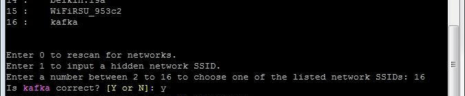
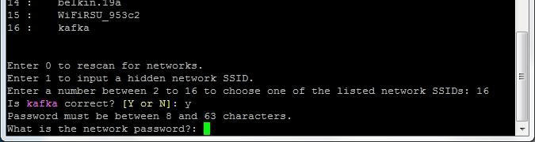
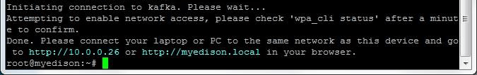

Connect to a Wi-Fi network
Shell into your Intel® Edison and run the configure_edison --wifi command. Choose a Wi-Fi network to connect to, then input any login credentials for that network.

-
Establish a serial connection to the Intel® Edison.
Don’t know how? Refer to Shell Access. -
Use the
configure_edisoncommand with the--wififlag to start the wifi configuration process.configure_edison --wifiGet a “configure_edison: not found” message?
You need to update your Edison firmware. Refer to Flash Firmware Manually for instructions.
Or, if you are using Windows 64-bit, a streamlined firmware flashing process is included with the Windows 64-bit integrated installer. Refer to Set Up Your Computer - Windows (64-bit integrated installer).
-
If you are asked if you want to set up the wifi, type “Y” and press Enter. (This prompt will occur on older Intel® Edison firmware only.)
-
The Intel® Edison will scan for Wi-Fi networks and display a list of available networks when finished.

If you do not see any networks, but you know they exist, try re-scanning by entering “0”, or repeat steps 2-3. -
Locate the network you would like to connect to in the list and enter the corresponding number in the prompt. Press Enter.
To confirm your entry, type “Y” and press Enter.

In this example, to connect to “kafka” use the number “16”. -
The network in this example requires a password. Your network might require other information. Enter the appropriate network credentials. Press Enter when finished.
 -
The Intel® Edison will attempt to make a connection to the network.
When you see a “Done” message, you are now connected to a Wi-Fi network.

Failed connection?
If the connection fails, you may have typed in your credentials incorrectly. Try again by typing in configure_edison --wifi and repeating the steps again.
If you cannot get online using Wi-Fi but need to program your board using the Intel® IoT Developer Kit IDEs, try Ethernet over USB instead.